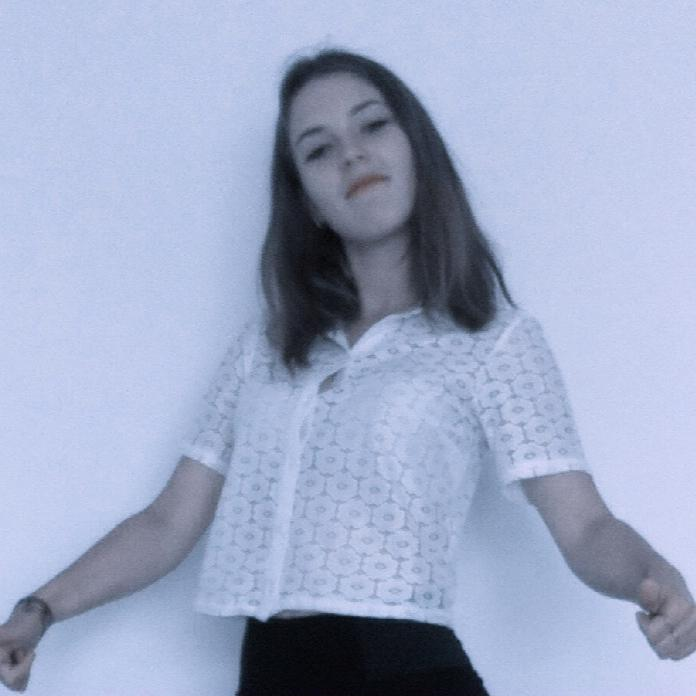

Home
Parcours
Expériences professionelles

ETUDES
Etudes littéraires -
Bac L - Mention bien
St Thomas de Villeneuve, Chaville (72)
Option Art plastique
BTS communication
Cesacom / 2013 -2015
STAGES
2010 - (1 semaine) -
France Télévision
2012 - (2 semaines) -
Euro RSCG
2014 - (1 semaine) -
Imprimerie Frazier
2014 - (2 mois) Stage de communication - Papeterie chic Isabelle Moreau
2014 - (1 mois) Stage de relations commerciales - Destination événementielle